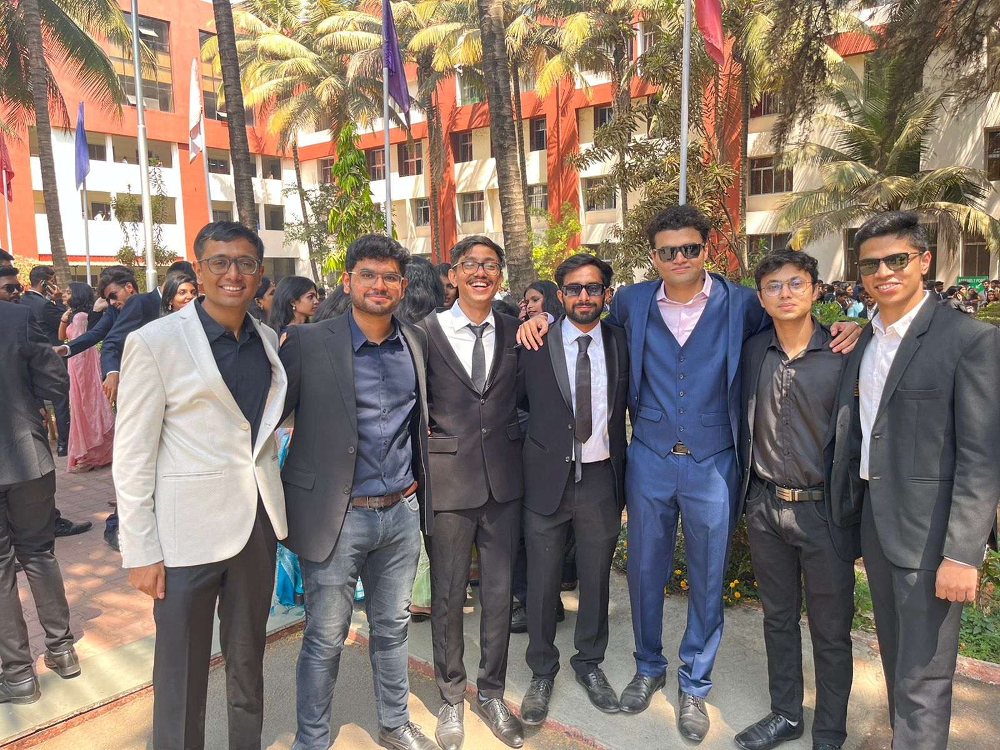
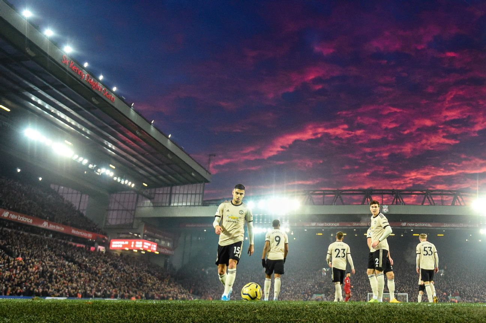
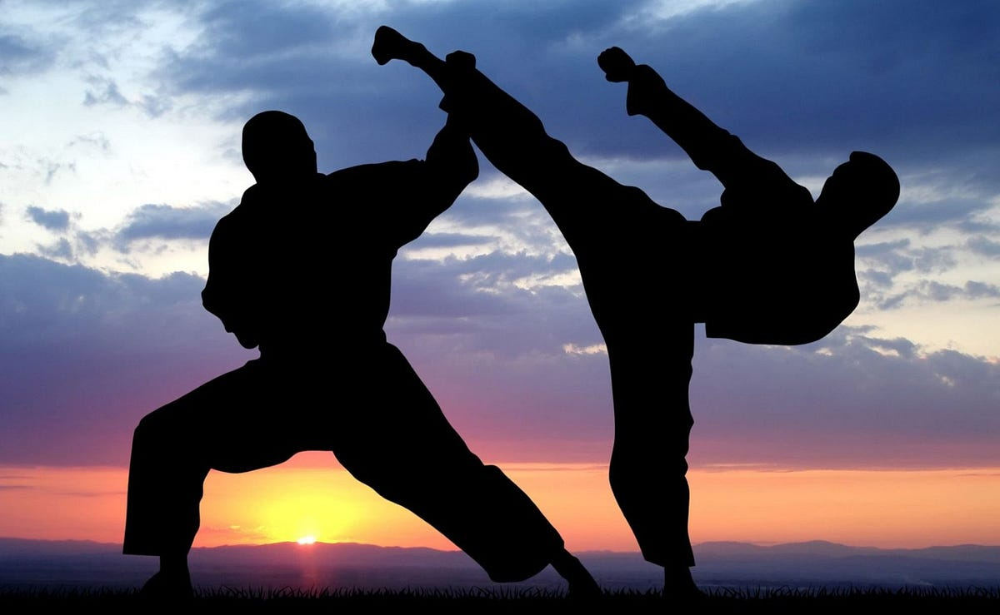
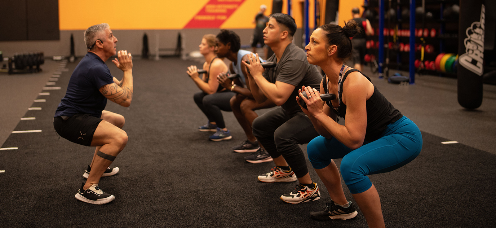
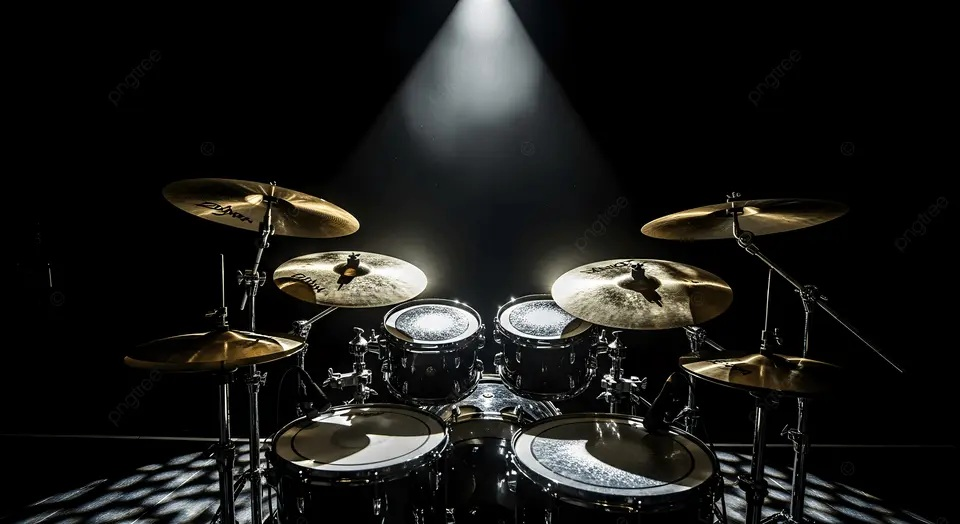

My Life Beyond the Lab
Outside of research and coursework, I find real joy in pushing myself physically and creatively. These pursuits aren't just hobbies, they've shaped how I think, compete, and carry myself under pressure. Whether it's on a football pitch, in a dojo, or behind a drum kit, I've always believed that who you are outside of work defines the engineer you become inside it.
I'm passionate about sport, discipline, movement, and craft. I've competed at a serious level in football and trained hard in martial arts, and I bring that same focus and intensity to everything I do. Music and photography round out the other side of me, a need to create, observe, and find beauty in the everyday.
These experiences have taught me resilience, teamwork, patience, and how to perform when it counts. They continue to influence how I approach problems, collaborate with people, and stay grounded through the demands of graduate school.


Football
I've played football competitively since school and represented my district at the district level — an experience that taught me more about leadership, pressure, and teamwork than almost anything else. Playing at that level means showing up consistently, reading the game fast, and trusting your teammates completely.
Football remains my favourite sport to this day. There's something irreplaceable about the combination of individual skill and collective strategy that keeps drawing me back to the pitch.

Martial Arts
I hold a blue belt in martial arts, a rank that represents years of consistent training, discipline, and a genuine respect for the craft. Martial arts has given me a framework for managing stress, staying composed, and developing mental clarity under pressure.
The dojo teaches you to be patient, to absorb what is useful, and to keep showing up even when progress is slow. Those are lessons I carry directly into research and engineering.

Fitness & Training
Working out is a non-negotiable part of my routine. I train regularly, lifting, conditioning, and staying active, because physical discipline is directly tied to mental performance. A good session in the gym sets the tone for everything else in the day.
Staying fit isn't just about aesthetics. For me it's about building a body and mind that can handle long hours of research, creative problem-solving, and the demands of a high-paced graduate program without burning out.

Drums & Music
I play the drums, and have for years. There's something deeply satisfying about rhythm, timing, and the physicality of percussion. It's an outlet that demands full presence: you can't be thinking about anything else when you're playing.
Music has always been a creative counterbalance to the analytical nature of engineering. It keeps the right brain active, feeds curiosity, and is a reminder that not everything needs to be optimized, sometimes the point is just to feel it.

Photography
Photography is how I slow down. I enjoy picking up a camera and finding something worth capturing — a moment, a composition, a quality of light that would otherwise go unnoticed. It's a habit that sharpens observation skills and builds a certain patience that carries over into technical work.
I mostly shoot candidly, people, places, and scenes that tell a story without being staged. Looking back through a collection of photos is one of the best ways I know to reflect on time well spent.